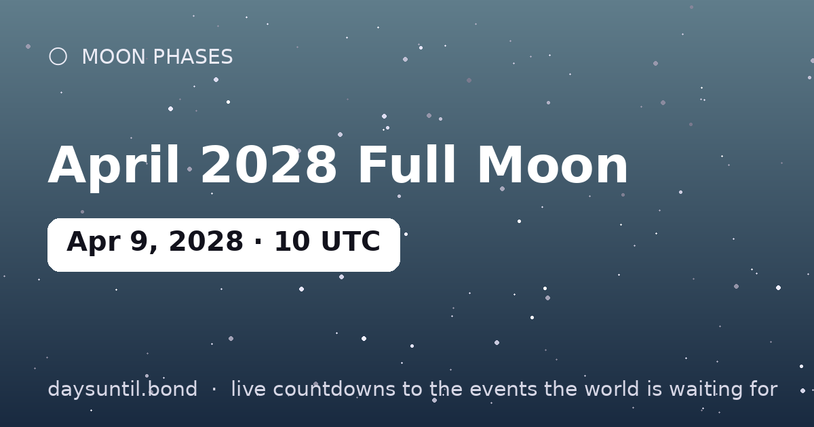

How Many Days Until April 2028 Full Moon?
April 2028 Full Moon falls on Sunday, April 9, 2028.
As of October 24, 2026: 533 days to go — 76 weeks and 1 days, 380 weekdays (153 weekend days), about 12,792 hours.

Quick facts
| Peak (UTC) | April 09, 2028 · 10:28 |
|---|---|
| Zodiac position | 20°05' Libra |
| Moon phase | Full Moon (100% illumination) |
| Cycle | Lunation ~29.5 days |
About April 2028 Full Moon
The April 2028 full moon peaks at 10:28 UTC on April 09, 2028, at 20°05' Libra in the tropical zodiac. Full moons always rise at sunset and set at sunrise, so the best viewing is any time the Moon is up that night — no equipment needed.
In astrology, the full moon in Libra is considered the month's closing chapter: what began at the Libra new moon six months earlier reaches fullness, and what is no longer working becomes impossible to ignore. Monthly full moons are the sky's built-in review meetings.
Your April 2028 Full Moon countdown milestones
It is easier to plan against fixed points than against a number that moves. These are the dates on which the countdown to April 2028 Full Moon passes each marker between now and the day itself — the last one falls on Saturday 08 April, when there will be 1 day left.
| Milestone | Day | Date | Remaining |
|---|---|---|---|
| 365 days | Saturday | 10 April 2027 | 365 days to go |
| 200 days | Wednesday | 22 September 2027 | 200 days to go |
| 100 days | Friday | 31 December 2027 | 100 days to go |
| 50 days | Saturday | 19 February 2028 | 50 days to go |
| 30 days | Friday | 10 March 2028 | 30 days to go |
| 14 days | Sunday | 26 March 2028 | 14 days to go |
| 7 days | Sunday | 02 April 2028 | 7 days to go |
| 3 days | Thursday | 06 April 2028 | 3 days to go |
| 1 days | Saturday | 08 April 2028 | 1 day to go |
How the remaining time breaks down
533 days is the headline, but it is rarely the number that helps. 380 of those are weekdays and 153 fall on a weekend, which is the split that matters if you are planning around work. It is 76 weeks and 1 days, or roughly 17.5 months, or about 12,792 hours.
| Unit | Until April 2028 Full Moon |
|---|---|
| Days | 533 |
| Weeks | 76 weeks and 1 days |
| Months (approx) | 17.5 |
| Weekdays | 380 |
| Weekend days | 153 |
| Hours | 12,792 |
| Sleeps | 533 |
Working days are Monday to Friday and do not subtract public holidays, which vary by country and employer — the full month-by-month split is on our weekday page for April 2028 Full Moon.